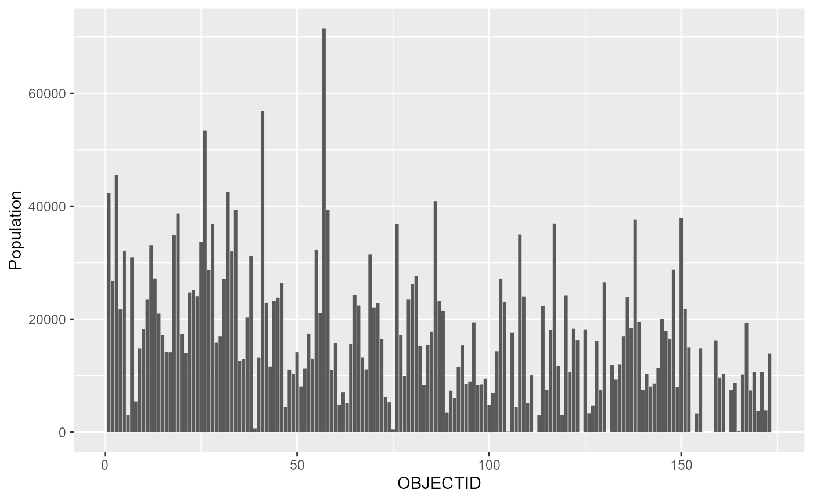

packpop2
This data provides information about population of Mashhad metropolice based on families,owners, tenants, and so on in each block in 2016. There a number of different targets that can be reached through this package such as population density This dataset contains 11 variables and 19943 rows.
Install the package
As a fundamental step, there is a need to install population package if you want to use this data set.
Here is a chunk in order to install the package:
knitr::opts_chunk$set(message = FALSE)
if(!require(remotes)){
install.packages("remotes")
library(remotes)
}
remotes::install_github("NiloofarNL/packpop2")##
checking for file 'C:\Users\bahman.notebook\AppData\Local\Temp\RtmpczZCb2\remotes184c40842c5c\NiloofarNL-packpop2-df65156/DESCRIPTION' ...
v checking for file 'C:\Users\bahman.notebook\AppData\Local\Temp\RtmpczZCb2\remotes184c40842c5c\NiloofarNL-packpop2-df65156/DESCRIPTION' (503ms)
##
- preparing 'packpop2': (974ms)
## checking DESCRIPTION meta-information ...
checking DESCRIPTION meta-information ...
v checking DESCRIPTION meta-information
##
- checking for LF line-endings in source and make files and shell scripts
##
- checking for empty or unneeded directories
##
- building 'packpop2_0.0.0.9000.tar.gz'
##
## Also a summary of this package can be seen by the chunk below:
## OBJECTID Neighbourhoods Families Owners
## Min. : 1 Length:173 Min. : 0 Min. : 0
## 1st Qu.: 44 Class :character 1st Qu.: 2552 1st Qu.:1120
## Median : 87 Mode :character Median : 4620 Median :2096
## Mean : 87 Mean : 5259 Mean :2342
## 3rd Qu.:130 3rd Qu.: 7034 3rd Qu.:3020
## Max. :173 Max. :20359 Max. :8314
## NA's :1 NA's :1
## Tenants Total Residential Units Apartment Units House Units
## Min. : 0 Min. : 0 Min. : 0 Min. : 0
## 1st Qu.: 1162 1st Qu.: 2478 1st Qu.: 1002 1st Qu.: 758
## Median : 2174 Median : 4540 Median : 2391 Median : 1428
## Mean : 2456 Mean : 5122 Mean : 3079 Mean : 2043
## 3rd Qu.: 3258 3rd Qu.: 6812 3rd Qu.: 4583 3rd Qu.: 2595
## Max. :10708 Max. :19815 Max. :12164 Max. :13236
## NA's :1 NA's :1 NA's :1 NA's :1
## Cottages or Sheds Shape_Length Shape_Area Area(Hectare)
## Min. : 0.000 Min. : 1899 Min. : 190576 Min. : 19.0
## 1st Qu.: 0.000 1st Qu.: 4290 1st Qu.: 876015 1st Qu.: 88.0
## Median : 1.000 Median : 5364 Median : 1368233 Median : 137.0
## Mean : 1.773 Mean : 5857 Mean : 1762437 Mean : 176.3
## 3rd Qu.: 2.000 3rd Qu.: 6925 3rd Qu.: 2067674 3rd Qu.: 207.0
## Max. :48.000 Max. :20888 Max. :16678412 Max. :1668.0
## NA's :1
## PopulationDensity Population
## Min. : 0.00 Min. : 0
## 1st Qu.: 76.75 1st Qu.: 8415
## Median :131.00 Median :15387
## Mean :131.25 Mean :17141
## 3rd Qu.:175.00 3rd Qu.:23460
## Max. :367.00 Max. :71466
## NA's :1Following this, there is a list of libraries in this data set:
As mentioned before, this data set has 14 variables
| OBJECTID | Id of each block as a factor |
| Neighbourhoods | The names of Mashhad’s neighbourhoods |
| Families | Number of families living in a block |
| Owners | Number of people who has their own property in a block |
| Tenants | Number of people who rent a property in a block |
| Total Residential Units | Whole number of residential suits in a block |
| Apartment Units | Number of suits in apartments in a block |
| House Units | Number of village houses in a block |
| Cottages or Sheds | Number of sheds in a block |
| Shape_Length | Surrounding a block in meter scale |
| Shape_Area | Surface area of a block in meter scale |
| Area(Hectare) | Surface area of a neighbourhoods in hectare scale |
| PopulationDensity | Population density of each neighbourhood |
| Population | Whole population of each neighbourhood |
Also we can see the bar chart of population in each block


Population Density in Mashhad 2016
Here is another map

Mashhad’s Neighbourhoods in 2016
Assuming that population density (r) at distance r from the city center declines monotonically, (Chen 2008)reintroduce an empirical model that can be written as
\[\begin{equation} \label{eq:1} \rho(r) = \rho_0 exp (-br) = \rho_0 exp (-\frac{r}{r_0}) \end{equation}\]Where \(\rho_0\) is a constant of propotionality which is supposed to equal the central density, that is, \(\rho\_0 = \rho(0)\), \(b\) denotes a rate at which the effect of distance attenuates, and \(r_0 = 1/b\) refers to a characteristic radius of urban population distribution.